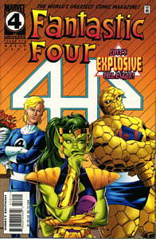

| First
Appearance :Fantastic Four #357, (as Alicia)
Fantastic Four #264 |
| Group
Affiliation :Associate of the Fantastic Four |
| Source
of Powers :Genetic structure |
| Base
of Operations :Unknown |
|
Identity :Secret, although the public believed that
she was Alicia Masters for many years |
| Former
Alias :Alicia Masters, Laura Green |
| Eyes:Green |
| Hair:Green |
|
Occupation :Warrior, adventurer |
Name :Lyra
Marital
Status :Divorced |
 |
| Strength
Level :Unknown, although she can increase her strength
level by shape shifting into a stronger form |
| Favorite
Story Line :Fantastic Four 358, Alicia is revealed to
be a skrull and the ending has a great issue when she dies at the
end. Somehow, I should of realized she survived. |
| Least
Favorite Story Line: All of her appearances. No, wait,
could it of been when Ben fell in love with her, when she gave
birth to a bizarre creature that would destroy the team, when
Johnny got back with her and broke up a dozen or so times. Yeash,
what a revolting development!! |
| Little
Known Fact :Skrulls require a device to lower the density
of their bodies to give birth due to their bizarre genetic makeup,
euw. |
Powers :Lyra can change
form to any animal or creature, thus gaining their density and
strength of that creature. Lyra can also mimic nearly anything as long
as the mass is somewhat equal to her own. The skrull heartbeat doesn't
change during the transformation, thus a person with extra sensory
hearing could detect a skrull in hiding. Lyra could project plasma
blasts through her wrists until she gave birth. |